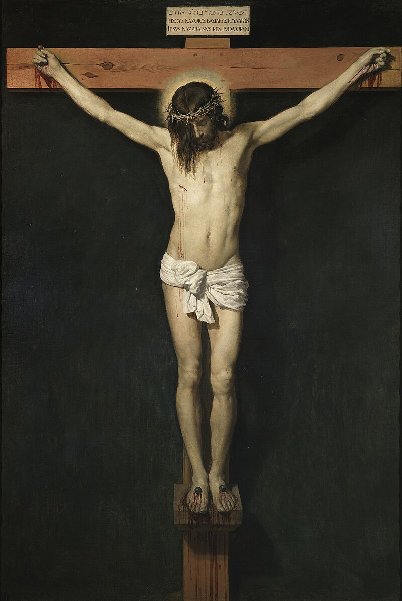
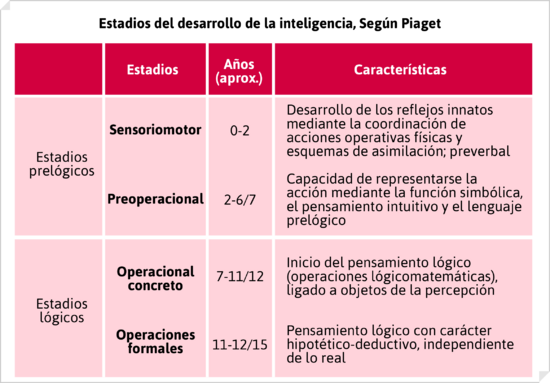
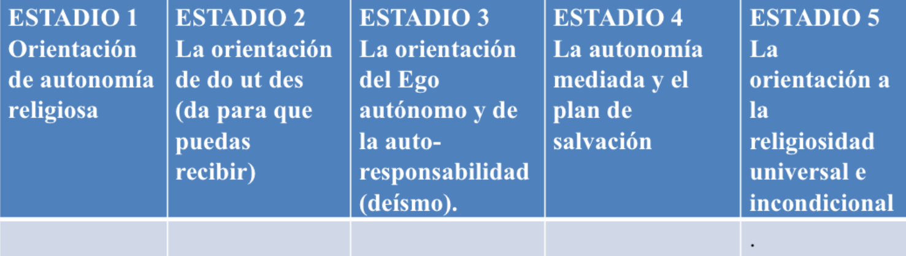
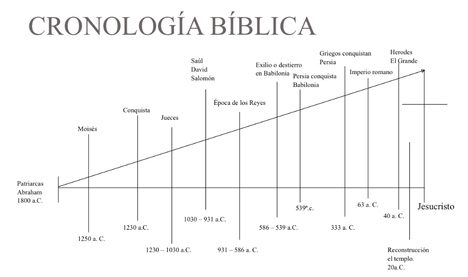
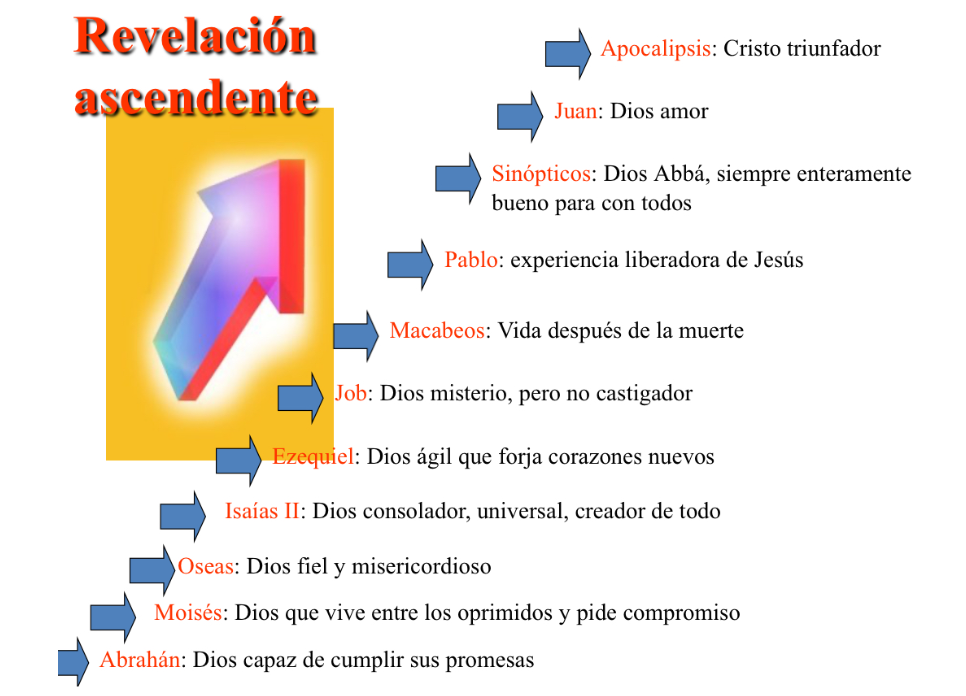

Virtudes Teologales - Ana Montoya

Fe: Creencia firme y confiada en algo o alguien.
Esperanza: Actitud o sentimiento de anticipar y desear que ocurra algo bueno en el futuro.
Caridad: Acto de mostrar amor y compasión hacia los demás sin esperar nada a cambio.
Virtudes Cardinales - Ana Montoya

Prudencia: Capacidad de tomar decisiones y actuar con cautela y discernimiento.
Templanza: Virtud que implica la moderación y el autocontrol en los deseos y placeres.
Fortaleza: Virtud que implica la capacidad de enfrentar y superar desafíos, adversidades y dificultades con valor y determinación.
Justicia: Virtud de práctica para dar a cada persona lo que le corresponde, basada en principios de equidad y moralidad.
Requisitos para que un acto se considere milagro - Ana Montoya

1. Superar las leyes naturales.
2. Ser atribuido a una intervención divina.
3. Confirmar una creencia o propósito espiritual.
7 Sacramentos y en qué consisten - Jennifer Morales

Bautismo: Es aquello que le da un sentido a la vida cristiana. Se limpia a la persona del pecado original y se vuelve un miembro de la Iglesia.
Penitencia: Los fieles consiguen el perdón después del bautismo.
Eucaristía: (Descripción de la Eucaristía aquí).
Confirmación: (Descripción de la Confirmación aquí).
Unción de los enfermos: (Descripción de la Unción de los enfermos aquí).
Orden sacerdotal: (Descripción del Orden sacerdotal aquí).
Matrimonio: (Descripción del Matrimonio aquí).
Libros de la Biblia, Mandamientos y Formas de Concebir a Dios - Terri

Libros de la Biblia: En total son 73 libros. 46 de ellos pertenecen al Antiguo Testamento, y los otros 27 son parte del Nuevo Testamento.
Mandamientos - Terri

- Amarás a Dios sobre todas las cosas.
- No tomarás el nombre de Dios en vano.
- Santificarás las fiestas.
- Honrarás a tu padre y a tu madre.
- No matarás.
- No cometerás actos impuros.
- No robarás.
- No darás falso testimonio ni mentirás.
- No consentirás pensamientos ni deseos impuros.
- No codiciarás los bienes ajenos.
5 Mandamientos de la Iglesia Católica - Gustavo Alberto Gómez

- Oír misa entera los domingos y fiestas de precepto.
- Confesar tus pecados al menos una vez al año.
- Comulgar por Pascua de Resurrección.
- Ayunar y abstenerse de carne los días prescritos.
- Ayudar a la Iglesia en sus necesidades.
Religión que fundó Jesucristo - Gustavo Alberto Gómez

Jesucristo es la figura central del cristianismo, por lo tanto, fundó el cristianismo. Sin embargo, es importante destacar que Jesús de Nazaret nació y creció en el seno del judaísmo, y su enseñanza inicial estaba dirigida principalmente a los judíos. Jesús se refirió frecuentemente a la Ley de Moisés y a las Escrituras hebreas, y su mensaje inicial se centró en la necesidad de arrepentimiento y en la llegada del Reino de Dios, que era una idea central en el judaísmo. Fue después de su muerte y resurrección que sus seguidores, liderados por los apóstoles, comenzaron a predicar su mensaje a los gentiles (no judíos) y a establecer las bases del cristianismo como una religión distinta del judaísmo. Sin embargo, las raíces judías de Jesús y su enseñanza inicial son fundamentales para entender el contexto y el significado de su mensaje.
Formas de Concebir a Dios - Terri

Dios puede ser concebido de muchas maneras diferentes, dependiendo de las creencias y experiencias personales de cada individuo. Algunas formas comunes de concebir a Dios incluyen:
- Dios como Padre: Una figura paternal amorosa y protectora.
- Dios como Creador: El origen de todo lo que existe, responsable de la creación del universo.
- Dios como Salvador: Un ser que interviene en la vida de las personas para guiarlas y salvarlas.
- Dios como Juez: Una entidad que evalúa y juzga las acciones humanas.
- Dios como Espíritu: Una presencia inmaterial que reside en todas partes y en todo momento.
Datos históricos, teológicos y culturales sobre Jesús y el cristianismo
Datos Históricos sobre Jesús:
Nacimiento y Vida Temprana: Jesús nació alrededor del año 4 a.C. en Belén. Era hijo de María y José, y creció en Nazaret.
Ministerio Público: Jesús inició su ministerio público alrededor de los 30 años, fue bautizado por Juan el Bautista, y predicó sobre el Reino de Dios.
Muerte y Resurrección: Jesús fue crucificado alrededor del año 30 d.C. y resucitó al tercer día, según los evangelios.
Datos Teológicos sobre Jesús:
Divinidad y Humanidad: En el cristianismo, Jesús es el Hijo de Dios, parte de la Trinidad junto con Dios Padre y el Espíritu Santo.
Redención y Salvación: La muerte de Jesús es vista como un sacrificio redentor, y su resurrección promete la vida eterna a sus seguidores.
Datos Culturales sobre el Cristianismo:
Expansión del Cristianismo: Los seguidores de Jesús se organizaron en comunidades que se extendieron por el Imperio Romano y más allá.
Ramas del Cristianismo: Incluyen el Catolicismo, la Ortodoxia Oriental y el Protestantismo.
Prácticas y Celebraciones: Los cristianos participan en sacramentos como el bautismo y la eucaristía, y celebran festividades como la Navidad y la Pascua.
Actitudes fanáticas ante la religiosidad - Mildred Durán
El fanatismo religioso se caracteriza por un apego incondicional a las creencias y prácticas religiosas, sin permitir la apertura a otras perspectivas o a la crítica constructiva. Las personas que padecen este síndrome suelen mostrar las siguientes actitudes:
- Dogmatismo: Las personas dogmáticas en el ámbito religioso suelen rechazar cualquier otra religión o punto de vista que no se ajuste a sus propias creencias. No están dispuestas a considerar otras perspectivas ni a dialogar sobre temas de fe. En el contexto religioso, un dogma es una afirmación considerada verdad por haber sido revelada por Dios.
- Odio a la diferencia: El odio a la diferencia es una forma de intolerancia que se manifiesta contra personas o grupos debido a sus creencias o prácticas religiosas, o incluso por la falta de las mismas. Puede llevar a la persecución, que implica maltrato, violencia, agresiones e incluso la muerte de indígenas o grupos religiosos.
- Actitud maniquea: Los maniqueístas creían ciegamente en que en la tierra, es decir, el purgatorio, se libran batallas diariamente entre estos dos extremos. El polo bueno se refería al paraíso, la bondad y lo benefactorio, mientras que el polo malo representaba la oscuridad, las tinieblas, los pecados y Satanás.
- Autoritarismo: La adhesión rígida a creencias y prácticas, así como la sumisión a autoridades percibidas como legítimas. Existen dos dimensiones: 1) sumisión autoritaria: la tendencia a someterse a dichas autoridades, 2) agresión autoritaria: hostilidad hacia personas o grupos considerados como amenazas.
- Carencia de espíritu crítico: Las personas asumen creencias religiosas sin cuestionarlas, algunos líderes religiosos manipulan a sus seguidores mediante interpretaciones arbitrarias de los libros sagrados, lo que puede afectar la comprensión genuina de las creencias.
Es importante destacar que no todos los creyentes religiosos son fanáticos religiosos. La religiosidad es una forma respetuosa y abierta de practicar la fe, mientras que el fanatismo religioso es una forma extremista y violenta de hacerlo.
Oración, rezo y pecado - Mildred Durán
Oración: Es una práctica espiritual fundamental en muchas tradiciones alrededor del mundo. A través de la oración, los creyentes buscan establecer una conexión con lo divino, expresar su fe, gratitud, encontrar consuelo y fortaleza en momentos de dificultad. Se convierte en un momento de reflexión íntima y profunda conexión con lo sagrado. Además, se considera una forma de mostrar devoción y rendir culto a la divinidad, fortaleciendo la relación entre el creyente y su objeto de adoración.
Rezo: Implica la repetición de frases o palabras rituales. Es una manifestación de agradecimiento o peticiones a Dios, pero no necesariamente un diálogo profundo, se basa en fórmulas establecidas y gestos específicos.
Pecado: Una transgresión voluntaria de los mandamientos o leyes divinas establecidas por una deidad o sistema de creencias religiosas. Puede manifestarse en acciones, pensamientos o intenciones que van en contra de lo que se considera correcto o moralmente aceptable según las enseñanzas religiosas. Esto produce la ruptura de la relación entre Dios y el individuo, que debe corregir su ofensa a través del sacramento de la confesión y del perdón por parte de Dios. Las consecuencias incluyen la lejanía de Dios, el remordimiento y el aumento de dificultades en el camino de la vida debido a la ausencia de la presencia de Dios.
Autores del desarrollo religioso - Mariana Jáuregui
 - Piaget: Tipos de inteligencia.
- Oser: Juicio religioso.
- Kohlberg: Juicio moral.
- Fowler: Tipos de fe.
Cronología bíblica de Jesús - Mariana Jáuregui Salazar
 Jesús tuvo múltiples etapas de desarrollo, como se presenta en las siguientes cronologías:
Características de la fe - Alejandro Muñoz
Cada persona puede experimentar y definir la fe de manera única, y sus características pueden variar según la tradición cultural, religiosa o personal de cada individuo, pero estas son las características generales:
- Confianza y Creencia: La fe implica confianza en algo o en alguien, a menudo sin necesidad de pruebas de que existe. Es una creencia en algo que no se puede comprobar.
- Esperanza: La fe es una expectativa de algo positivo en el futuro o que algo mejorará.
- Convicción Interna: La fe no depende de la lógica. Es una creencia profunda que reside en el corazón y la mente.
- Fidelidad y Lealtad: La fe puede implicar fidelidad y lealtad a una religión, a un dios o a un santo.
- Transformación Personal: La fe puede dar un propósito, sentido y dirección.
- Práctica y Acción: La fe se ve a través de las prácticas y acciones, como la oración, la meditación, rituales o en la ayuda a los demás.
- Resiliencia: La fe da fuerza y resiliencia en tiempos difíciles, permitiendo a las personas enfrentar sus problemas con una actitud positiva.
- Comunión y Comunidad: La fe se comparte dentro de una comunidad con las mismas creencias y valores.
Partes de la Eucaristía - Saraí
- Ritos iniciales: Son la primera parte de la Misa, sus propósitos son preparar a los creyentes espiritualmente para participar en el sacrificio eucarístico.
- Liturgia de la Palabra: (Descripción de la Liturgia de la Palabra aquí).
- Liturgia Eucarística: (Descripción de la Liturgia Eucarística aquí).
- Ritos de Conclusión: (Descripción de los Ritos de Conclusión aquí).
Jerarquía en la Iglesia Católica - Alejandro Tejeda
- Sacerdotes Diocesanos: Estos sacerdotes están asignados a una diócesis específica y trabajan bajo la autoridad del obispo diocesano. Suelen servir en parroquias locales, ofreciendo misas, sacramentos, y otras funciones pastorales.
- Sacerdotes Religiosos: Estos sacerdotes pertenecen a órdenes o congregaciones religiosas, como los Jesuitas, Franciscanos, Dominicos, etc. Viven de acuerdo a las reglas de su comunidad y a menudo se dedican a tareas específicas como la educación, misiones, o el trabajo social.
- Obispos: Son los responsables de una diócesis. Tienen autoridad sobre los sacerdotes y diáconos de su jurisdicción y son responsables de la administración y liderazgo espiritual de su diócesis.
- Arzobispos: Son obispos que están a cargo de una arquidiócesis, que es una diócesis de mayor importancia o tamaño. A menudo supervisan a otros obispos en su región.
- Cardenales: Son obispos o arzobispos que han sido nombrados por el Papa para formar parte del Colegio Cardenalicio. Los cardenales tienen la responsabilidad de elegir al nuevo Papa en un cónclave y a menudo ocupan roles importantes en la administración de la Iglesia.
- El Papa: Es el líder supremo de la Iglesia Católica y el obispo de Roma. Tiene autoridad máxima sobre toda la Iglesia y es considerado el sucesor de San Pedro.
Además de estos roles, hay otras posiciones específicas como los diáconos, que pueden ser permanentes (no aspirando al sacerdocio) o transitorios (en camino a ser sacerdotes).